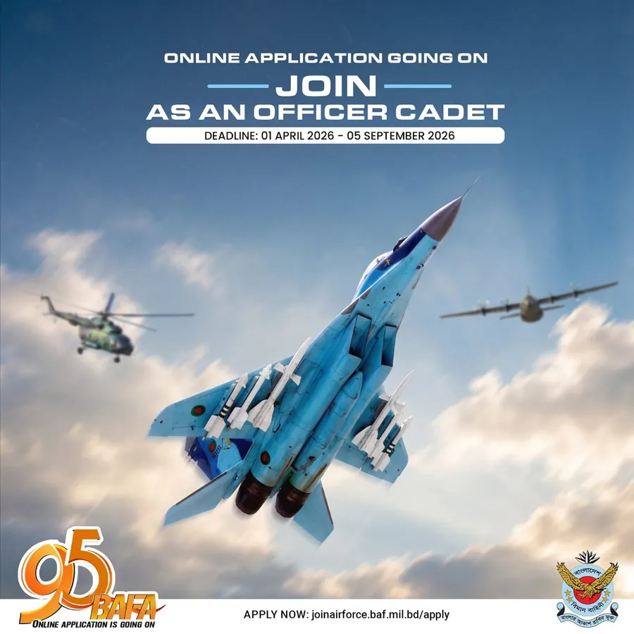
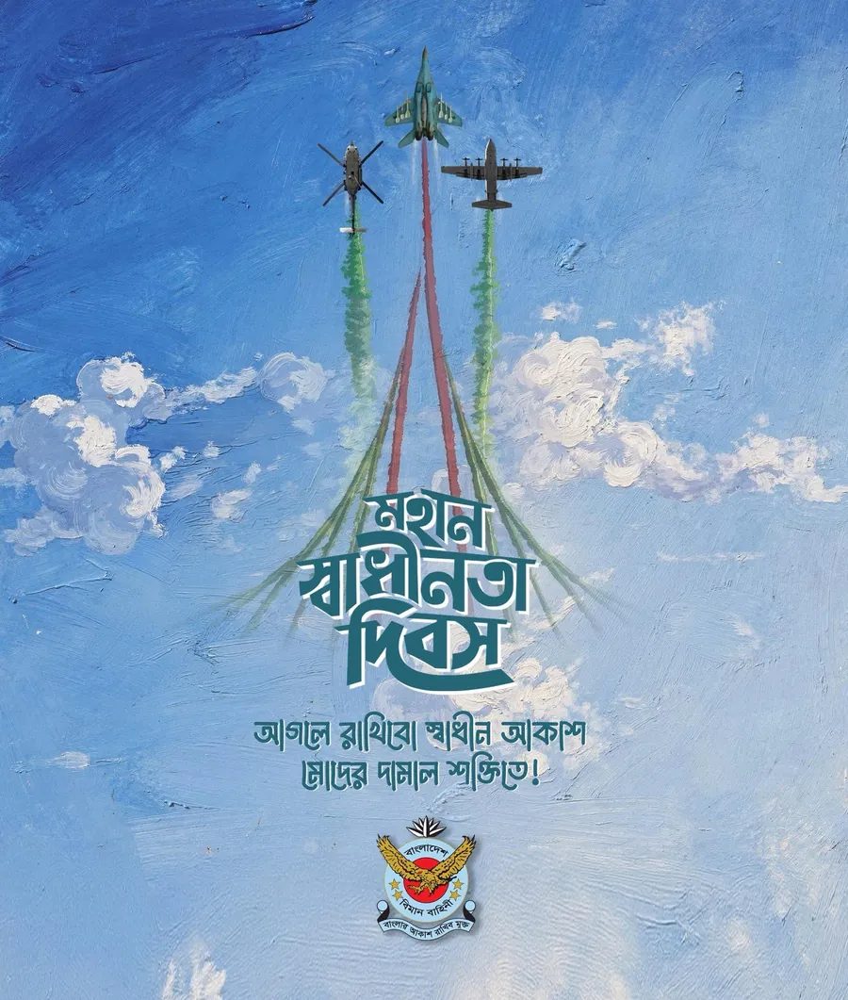
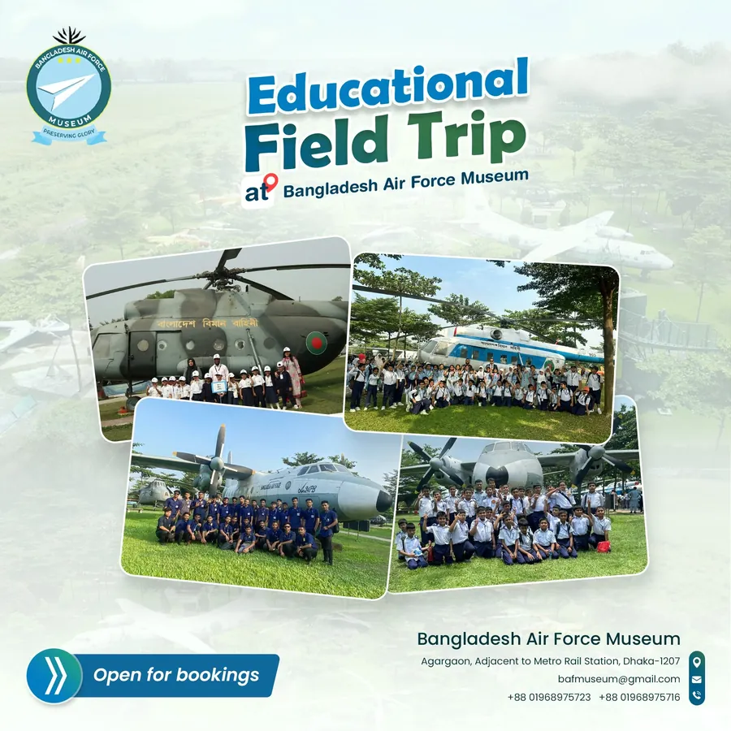
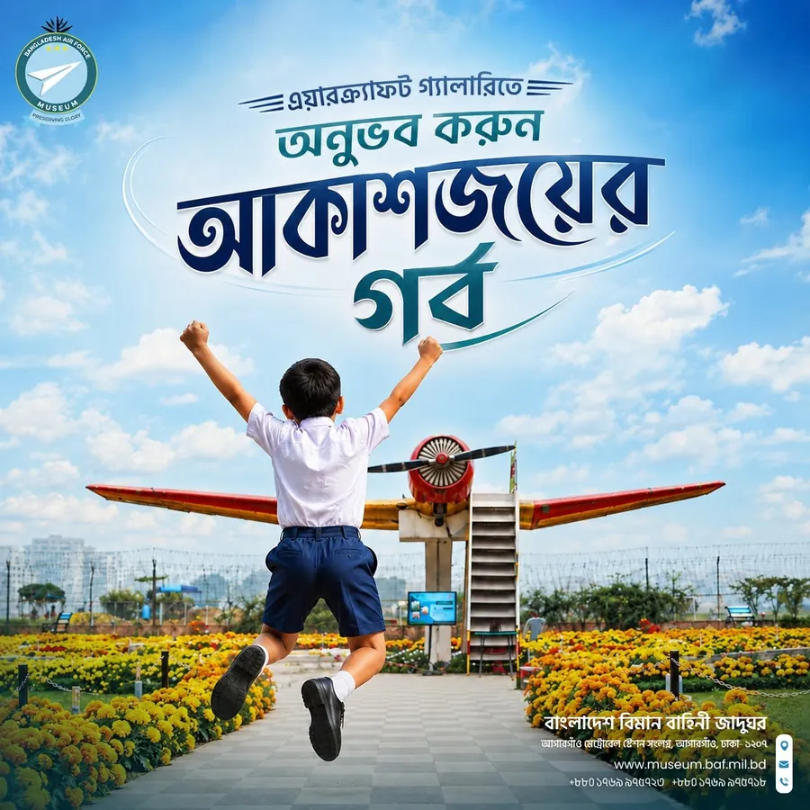

বাংলাদেশ বিমান বাহিনী · সোশ্যাল মিডিয়া · সরকারি
বিমান বাহিনীর দুটি অফিসিয়াল পেজের জন্য সোশ্যাল মিডিয়া
একটি পেজ তরুণ অফিসার রিক্রুট করে, অন্যটি মিউজিয়াম ভিজিট প্রমোট করে। দুটোই বাংলাদেশ বিমান বাহিনীর, তাই বিনোদনের জন্য তৈরি ফিডে কাজ করার পাশাপাশি এদের ভয়েস অফিসিয়াল হতে হতো। কাজটি টেকাবাইট সলিউশনস-এর সাথে সম্পন্ন করা।
এক নজরে
- দুটি পেজ, দুটি ব্রিফ: রিক্রুটমেন্টের জন্য নাগরিক গর্ব, মিউজিয়ামের জন্য একটি দারুণ দিন কাটানোর প্রতিশ্রুতি।
- বাংলা ও ইংরেজি কপি, যাতে সবাই বুঝতে পারে।
- অনলাইনে টিকিট বুকিং এবং ভার্চুয়াল মিউজিয়াম ওয়াক-থ্রুর জন্য রিল স্ক্রিপ্ট।
- ক্লায়েন্ট
- বাংলাদেশ বিমান বাহিনী (টেকাবাইট সলিউশনস-এর মাধ্যমে)
- পেজসমূহ
- জয়েন বিডি এয়ার ফোর্স + এয়ার ফোর্স মিউজিয়াম
- স্থান
- ঢাকা সেনানিবাস
- কাজ
- দ্বিভাষিক ক্যাপশন, রিল স্ক্রিপ্ট




01 / 04
সমস্যাটি কী ছিল
রিক্রুটমেন্টের জন্য যোগ্য তরুণদের আবেদন করা প্রয়োজন ছিল। এর মানে কপি হতে হবে অনুপ্রেরণাদায়ক ও স্পষ্ট; আড়ষ্ট বা নীতিগল্পমূলক নয়।
মিউজিয়ামের প্রয়োজন ছিল ফলোয়ারদের টিকিট ক্রেতায় পরিণত করা। এর মানে পোস্ট হতে হবে মজার, শিক্ষণীয় এবং ভিজিট করার মতো।
দুটি পেজকেই এমন একটি প্ল্যাটফর্মে অফিসিয়াল ভয়েস ধরে রাখতে হয়েছিল, যা সাধারণত বিনোদনকে পুরস্কৃত করে।
02 / 04
পরিকল্পনাটি কী ছিল
- রিক্রুটমেন্ট: ১৮–২৫ বছর বয়সীদের জন্য। সার্ভিসে যোগদানকে একটি ক্যারিয়ার, দায়িত্ব এবং উন্নতির সুযোগ হিসেবে তুলে ধরা।
- মিউজিয়াম: শুধুমাত্র একটি স্থির প্রদর্শনী নয়, বরং জীবন্ত ইতিহাসের একটি দিন। বাস্তব এয়ারক্রাফট, আসল গল্প এবং এক ক্লিকেই টিকিট বুক করার সুবিধা।
- উভয়ই: বাংলা এবং ইংরেজি, সব অডিয়েন্সের কাছে পৌঁছাতে।
03 / 04
আমি যা করেছি
- উভয় পেজের জন্য নিয়মিত ক্যাপশন।
- রিক্রুটমেন্ট পোস্ট: যোগ্যতার হাইলাইটস, ডেডলাইন রিমাইন্ডার এবং ক্যারিয়ার পাথের গল্প।
- মিউজিয়াম পোস্ট: ভিজিট প্রোমো, ইভেন্ট, এয়ারক্রাফট ফিচার এবং বিমান বাহিনীর মাইলফলক।
- অনলাইনে টিকিট কাটা এবং ভার্চুয়াল ওয়াক-থ্রুর জন্য রিল স্ক্রিপ্ট।
- জাতীয় দিবস, বিমান বাহিনী দিবস এবং স্বাধীনতা দিবসের ক্যাম্পেইন।
04 / 04
ফলাফল কেমন এলো
2অফিসিয়াল পেজ
বাংলা + ইংরেজিপ্রতিটি পোস্টে
নাগরিক + সাংস্কৃতিকদুটি ব্রিফ
অফিসিয়ালব্র্যান্ড ভয়েস, বজায় রাখা হয়েছে
যেহেতু এটি একটি সরকারি ক্লায়েন্ট, তাই অ্যানালিটিক্স গোপন রাখা হয়েছে।